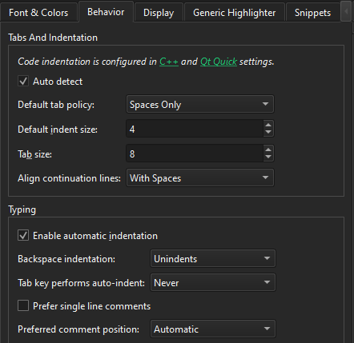
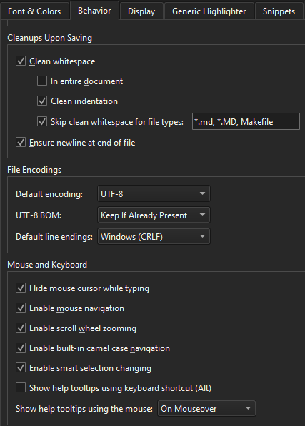

Indent text or code
When you type text or code, it is indented automatically according to the selected text editor or code style preferences. Select a block to indent it when you select Tab. Select Shift+Tab to decrease the indentation.
Don't detect indentation settings
When you open a document, the editor tries to automatically detect if it uses tabs or spaces for indentation and the indentation width, by inspecting its contents. If the automatic detection fails, the default setting is used.
To turn off the automatic detection of indentation settings, go to Preferences > Text Editor > Behavior and clear Auto detect.

Fix indentation in an open file
To fix the indentation settings for the file currently open in the editor, select a different setting with Spaces > Document Settings or Tabs > Document Settings on the editor toolbar.
To fix the indentation in the file currently open in the editor:
- On the editor toolbar, select Spaces or Tabs, and then select Auto-indent Selection to automatically indent the selected text using the current settings.
- Go to Edit > Advanced, and select an indentation option or use keyboard shortcuts.
Indentation options
- To automatically indent the highlighted text, select Auto-indent Selection or select Ctrl+I.
- To automatically format the highlighted text, select Auto-format Selection or select Ctrl+;.
- To adjust the wrapping of the selected paragraph, select Rewrap Paragraph or select Ctrl+E followed by R.
- To toggle text wrapping, select Enable Text Wrapping or select Ctrl+E followed by Ctrl+W.
- To visualize whitespace in the editor, select Visualize Whitespace or select Ctrl+E followed by Ctrl+V.
- To clear all whitespace characters from the currently open file, select Clean Whitespace.
Automatically fix indentation upon file save
To automatically fix indentation according to the indentation settings when you save the file, go to Preferences > Text Editor > Behavior > Clean whitespace and select Clean indentation. Select Skip clean whitespace for file types to exclude the specified file types.

Show whitespace in editor
To visualize whitespace in the editor, go to Preferences > Text Editor > Display > Visualize whitespace.
To visualize indentation, select Visualize Indent. To adjust the color of the visualization, change the value of the Visual Whitespace setting of the editor color scheme in Font & Colors.

Display right margin
To help you keep line length at a particular number of characters, set the number of characters in Display right margin at column. To use a different color for the margin area, select Tint whole margin area. Clear it to show the margin as a vertical line.
To use a context-specific margin when available, select Use context-specific margin. Then, use the ClangFormat ColumnLimit option to set the margin, for example.
See also C++ Code Style, Behavior, Specify Qt Quick code style, and Keyboard Shortcuts.